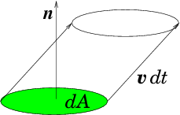
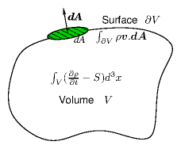
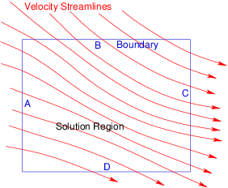
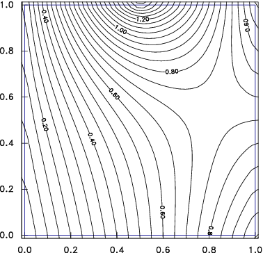
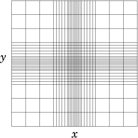
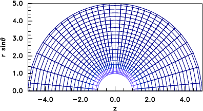
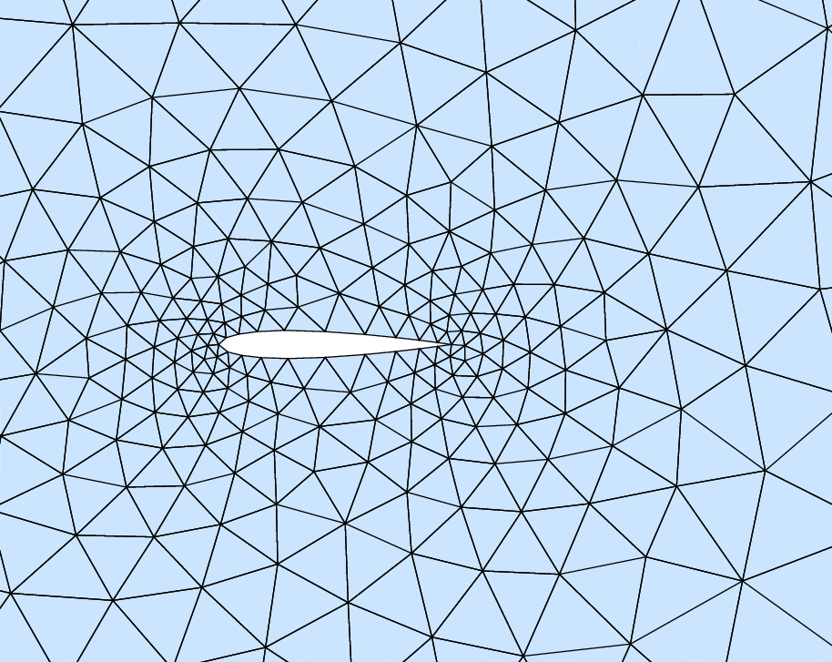

Partial differential
equations arise in almost every problem that exists in
multi-dimensional space. The gradient operator of
vector calculus is (in three dimensional space)
∇ = (
∂
∂x
,
∂
∂y
,
∂
∂z
),
(4.1)
a partial differential operator.
Partial differential equations also arise when there is time-dependent
behavior within a domain that is one-dimensional in space. Then the
two dimensions (independent variables) are x and t.
Probably the most important part of computational science and
engineering is formulating the calculation in terms of partial
differential equations. Once a situation is properly formulated, the
numerical techniques we are studying can be applied. But turning a
problem in the real world into partial differential equations
representing it, requires deep knowledge. This section can give only a
few examples.
4.1.1 Fluid Flow
The flow of a substance that can be considered to be a continuum
fluid, such as water, or (collisional) gas, is governed by a hierarchy
of equations. They are fundamentally conservation equations of
substance (e.g. mass), of momentum, and of energy. The momentum
conservation equation is often called the Navier-Stokes equation. It
relies on the other equations. Let's derive the conservation of
substance or continuity equation.
Consider a
substance with density ρ(x) which we can consider to be the
substance's mass per unit volume (but could alternatively be number of
particles per unit volume or electric charge per unit volume). Suppose
that this substance has a volumetric source density
S(x). This quantity denotes the amount
(mass) of substance that is created per unit time per unit volume at
position x. Such creation might be by chemical
reaction (e.g. producing the substance CO2 from
reaction of CO and O2) or it might be by nuclear reaction (e.g. producing Xe135 by fission of uranium). The source could also be
negative, corresponding to destruction of the substance, for example
radioactive disintegration of Xe135, or a balance between
creation and destruction. Apart from the processes represented by S,
however, the substance is conserved (neither created nor
destroyed). If the substance is able to flow, and has a velocity
v(x), then it can move around and as it does so it gives
rise to a flux density of substance ρv
(mass per unit area per unit time). [Flux density represents
the amount (mass) of substance per unit time carried by the flow across
unit area with normal in a certain direction; it is therefore a vector
quantity.]
Across any small surface (element) dA the flux
(mass per unit time) is equal to ρv.dA, as
illustrated in Fig. 4.1.

Figure 4.1: The elementary volume of fluid crossing a surface element
dA in time element dt is
dtv.
^
n
dA = dt v.dA
. So the mass per unit time is ρv.dA.
Mass conservation is then described by
considering some control volume V whose surface is ∂V. For
any such volume, the rate of increase of the total amount of substance
within the volume must be equal to the total source density within the
volume plus the amount flowing in across its surface:
∂
∂t
⌠ ⌡
V
ρd3x =
⌠ ⌡
V
S d3x −
⌠ ⌡
∂V
ρv .dA.
(4.2)

Figure 4.2: Conservation integrals over arbitrary volume V with
surface ∂V.
Using Gauss's (divergence) theorem, illustrated
in Fig. 4.2, that for any
vector field u (here u=ρv), the integral over
a closed volume of the divergence is equal to the surface integral of
the vector:
⌠ ⌡
V
∇.u d3 x =
⌠ ⌡
∂V
u.dA,
(4.3)
the surface term can be converted to a volume integral and the mass conservation equation becomes:
⌠ ⌡
V
⎛ ⎝
∂ρ
∂t
+∇.(ρv) − S
⎞ ⎠
d3x = 0.
(4.4)
This identity applies for any volume V. The only way that can
be true is if the integrand is everywhere equal to zero:
∂ρ
∂t
+∇.(ρv) − S = 0.
(4.5)
This is usually called the "continuity" equation. Sometimes,
arguably more physically, it is called the "advection" equation. It
is a partial differential equation in three space and one time
variables.
We'll discuss the rest of the fluid equations later; but for now
consider a steady state
∂
∂t
=0
, in which the
velocity v(x) is prescribed everywhere, illustrated in
Fig. 4.3. The resulting
partial differential equation is
∇.(ρv) = v.∇ρ+ ρ∇.v = vx
∂ρ
∂x
+ vy
∂ρ
∂y
+ vz
∂ρ
∂z
+ G(x) ρ = S,
(4.6)
where the components of the velocity vx, vy, vz and the
divergence of the velocity, G=∇.v, are prescribed
functions of position.

Figure 4.3: The advection equation with prescribed velocity v
amounts to integration along the streamlines. Conditions
("initial" conditions) can be applied along the solution region
boundaries A and B, but not then along C and D.
From the point of view of solving for ρ as a function of space,
this is a linear first-order partial differential equation in three
dimensions, with variable (i.e. non-uniform) coefficients vx,
vy, vz, and G. It is inhomogeneous if S ≠ 0, but
homogeneous if S=0 everywhere.
4.1.2 Diffusion
When a substance such as a gas diffuses through a some other medium,
for example a porous solid, or another (flow free) gas, the flux
density ρv of the substance is frequently proportional to
the gradient of its density ρ:
ρv = − D ∇ρ,
(4.7)
where D is the diffusion coefficient.
For such a diffusion problem, we can eliminate the velocity from the
continuity equation (4.5) and obtain the diffusion equation:
∂ρ
∂t
−∇.(D∇ρ) − S = 0.
(4.8)
This is a linear partial differential equation that is second order in the
spatial derivatives (e.g. if D is uniform the second term becomes
Laplacian −D∇2ρ); but it is first order in
time.
4.1.3 Waves
The equation that governs waves in one dimension, for example
small-amplitude compressional vibrations of a column of air in a pipe,
or transverse vibrations of a stretched string or a rigid rod, is
∂2 ψ
∂t2
=cs2
∂2 ψ
∂x2
,
(4.9)
where cs is the wave (sound) speed, and ψ represents the wave
displacement or perturbed quantity (e.g. pressure). The wave
equation is second
order in space and time, and linear (provided cs does not depend on ψ).
4.1.4 Electromagnetism
Maxwell's equations of electromagnetism, relating the electric and
magnetic fieldsE, and B, to the
charge density
ρq, and the electric current densityj, in the absence
of dielectric or magnetic materials are:
∇. E = ρq/ϵ0
(4.10)
∇×E = −
∂B
∂t
∇. B = 0
∇×B = μ0j + μ0ϵ0
∂E
∂t
where ϵ0=8.85×10−12 F/m is the permittivity of free
space, μ0=4π×10−7 H/m is the permeability of free
space. These fundamental constants satisfy μ0ϵ0 = 1/c2, where c is the speed of light.
These are a system of partial differential equations. There appear to
be eight in all because the curl equations are vector equations (three
equations in one) and the divergence equations are single equations.
However, there's some built-in redundancy in the equations that
reduces there effective number to six (equal to the number of dependent
variables in the components of the electric and magnetic fields).
Only rarely does one solve the full set of equations numerically. More
usually one is interested in simplified special cases. For example, if
time dependence can be ignored, then ∇×E=0, which
is a sufficient condition to allow the electric field to be expressed
as the gradient of a scalar potential E=−∇ϕ. In that
case, the potential satisfies
−∇.E = −∇.(−∇ϕ) = ∇2 ϕ =
∂2ϕ
∂x2
+
∂2ϕ
∂y2
+
∂2ϕ
∂z2
= −ρq/ϵ0,
(4.11)
which is Poisson's equation23. Poisson's equation sets a second
order differential, the Laplacian (∇2) of the
potential equal to a (presumably prescribed) function −ρq/ϵ0.
4.2 Classification of Partial Differential Equations
In the theory
of partial differential equations, there are three types of
differential equation. They are called: Hyperbolic,
Parabolic, and Elliptic. To
understand this classification rigorously would take us far beyond our
scope, but it is important for computation because the methods of
solving the different types of equation are different.
For our purposes, the classification can be considered
as follows for second order equations. Write the general linear
second-order partial differential equation governing dependent
variable ψ for independent variables xi as
∑ i,j
cij
∂
∂xi
∂
∂xj
ψ+
∑ i
ci
∂
∂ xi
ψ+ c ψ = const.
(4.12)
A specific example might be
A
∂2
∂x2
ψ +2B
∂2
∂x ∂y
ψ+ C
∂2
∂y2
ψ = 0.
(4.13)
Consider the coefficients cij, and regard them as defining a
surface in the multidimensional space via the quadratic
form associated with them:
∑ i,j
cijxixj +
∑ i
ci xi = const.
(4.14)
Specifically:
Ax2 +2B xy + Cy2 = const.
(4.15)
Then the partial differential equation is hyperbolic,
parabolic, or elliptic according to whether the surface so defined
is itself hyperbolic, parabolic, or elliptic.
For our two-dimensional specific example, the surface is
Hyperbolic
if B2−AC > 0; for example B=0, C=−A, x2 − y2 = const.
Parabolic
if B2−AC = 0; for example B=C=0, x2 −y = const.
Elliptic
if B2−AC < 0; for example B=0, C=A, x2 + y2 = const.
And so is the equation.
The examples we have given previously illustrate characteristically
these different types.
The wave equation is hyperbolic.
The diffusion equation is parabolic.
The Poisson equation is elliptic.
The first order equation for fluid flow with prescribed velocity
(advection equation) is ambiguous under this classification because
the surface for a first order form is a plane. But a plane can be
considered a degenerate hyperbola, because it extends to infinity
(unlike an ellipse which is finite in extent). The first order
system for one scalar dependent variable is always
hyperbolic.24
Loosely speaking, second order hyperbolic equations are wave-like, and
elliptic equations are steady-flux-conservation-like. A hyperbolic
or parabolic equation generally has at least one independent variable
that is like time, as well as others that are like space. An
elliptic problem is more like a steady (non-time-varying) problem in
multiple space dimensions. The classification is more fundamentally to
do with whether a problem of order N with N boundary
conditions on a single surface (the
multidimensional equivalent of an initial value problem) can be solved
or not. Such a problem is called a Cauchy problem.
Generally, hyperbolic equations are those for which the
Cauchy problem can be solved; for elliptic equations it cannot.
The most important distinction from the viewpoint of numerical
solution of partial differential equations is with respect to the
boundary conditions. Are these all applied on a single open surface,
such as the plane at t=0? If so (hyperbolic and parabolic equations
only) then this is an initial value problem where we are trying
to solve for the time evolution and we can integrate forward in time
from the initial conditions. For example, recalling Fig. 4.3 for the (hyperbolic) advection
equation, one can see immediately that because the equation governs
the variation of density along a streamline, it could make no sense to
apply conditions at two different points along the one
streamline.

Figure 4.4: An elliptic equation, such as Laplace's equation has
boundary conditions applied round an entire closed surface. In
this case, the potential is prescribed everywhere on the square
domain boundary, and contours of potential are plotted.
Alternatively, are the conditions applied on the boundary of a closed
domain (as illustrated in Fig. 4.4)? If so (elliptic
equations) then the solution everywhere depends upon all the boundary
information, it is called a boundary value
problem. Then we generally can't
successfully integrate from the boundary. "Shooting" doesn't work in
multiple dimensions; so we can't turn the problem into an interative
initial value problem the way we did in one-dimension. We have to
converge to the full solution everywhere simultaneously.
4.3 Finite Difference Partial Derivatives
As with ordinary differential equations, a key step in implementing
numerical solution of partial differential equations is the expression
of the derivatives in terms of the discrete numerical representation
of the variables. There are many
possible such discrete representations. One might be in terms of the
Fourier coefficients aij of a discrete Fourier representation
such as:
ψ =
∑ i,j
aijsin(πi x/Lx)sin(πj y/Ly),
(4.16)
(where we've chosen to rule out cosine terms by presuming the boundary
conditions to be ψ = 0 at x=0,Lx or y=0,Ly). There are some
equations in which it is computationally efficient to work in terms of
such coefficients, especially in coordinate directions that are ignorable.
Far more often, though, the representation of our variables is on a
discrete spatial mesh with finite spacing in the independent
variables.
A mesh is considered to be "structured" if
the points at which the solution is to be found are in a regular order
in each of the coordinate directions. The most obvious choice is
cartesian coordinates. The mesh nodes would then be
at positions (xn,ym,zl), where each array xn, ym, etc., is
ordered xn−1 < xn < xn+1, etc. The mesh is then
"uniform" if the spacing between nodes is the
same for all nodes: xn+1−xn=∆x for all n, and similarly
for y, z. Structured meshes are also possible on general
curvilinear coordinates, for example
cylindrical or spherical coordinates, provided the domain remains
"rectangular" in the coordinates; in other words, provided for some
set of coordinates (ξ,η,ζ), the ξn are independent of
ηm and ζl, and so on. Fig. 4.5 gives two
examples. For such structured meshes, the
most natural and adaptable finite representation is by finite
differences.
(a)(b)
Figure 4.5: Structured grids. (a) Rectangular, but non-uniform. (b)
Curvilinear, but still structured.
By contrast, an unstructured grid can
have any degree of connectedness. Its cells will not generally be
quadrilaterals (in two-dimensions) or
hexahedrons (in three dimensions) and it is far less
clear how to construct a finite-difference scheme. Fig. 4.6 shows an example of a triangular unstructured
mesh25.

Figure 4.6: A region of an unstructured mesh. Such meshes are
designed to give greater resolution in areas of more rapid
variation, often close to boundaries of complicated or subtle
shapes. This example uses a triangular mesh but other choices are
possible.
We'll stick to structured meshes here.
Just as in one dimension we use a representation
d ψ
dx
⎢ ⎢
n+1/2
=
ψn+1−ψn
xn+1−xn
,
(4.17)
so in two dimensions we can
generalize this to partial derivatives of a dependent variable
ψ(x,y) in x and y on mesh positions n,m as
∂ψ
∂x
⎢ ⎢
n+1/2,m
=
ψn+1,m−ψn,m
xn+1−xn
,
∂ψ
∂y
⎢ ⎢
n,m+1/2
=
ψn,m+1−ψn,m
ym+1−ym
,
(4.18)
with obvious generalization to higher dimensions. Two (or more)
indices denote the mesh node (or half-node position) where the value
of the variable is to be considered evaluated.
Higher derivatives are formed by taking
appropriate differences of derivative expressions. So
∂2 ψ
∂ x2
⎢ ⎢
n,m
=
⎛ ⎝
∂ψ
∂ x
⎢ ⎢
n+1/2,m
−
∂ψ
∂ x
⎢ ⎢
n−1/2,m
⎞ ⎠
xn+1/2−xn−1/2
(4.19)
and
∂2 ψ
∂ y2
⎢ ⎢
n,m
=
⎛ ⎝
∂ψ
∂ y
⎢ ⎢
n,m+1/2
−
∂ψ
∂ y
⎢ ⎢
n,m−1/2
⎞ ⎠
ym+1/2−ym−1/2
(4.20)
into which we substitute the expressions from eq. (4.18).
That leads to a sum of coefficients times the values of ψ at
three mesh points.
If we are dealing, for example, with Poisson's
equation,
∇2 ψ = ρ, then the entire finite difference
expression becomes:
∂2 ψ
∂ x2
⎢ ⎢
n,m
+
∂2 ψ
∂ y2
⎢ ⎢
n,m
=
∑ i=adjacent
ai(ψi−ψn,m) = ρn,m,
(4.21)
where the sum is over the nodes adjacent to n,m, in other words, i
takes the four cases (n−1,m), (n+1,m), (n,m−1), (n,m+1), and
for uniform mesh the coefficients ai are 1/∆x2 or
1/∆y2. Written out in full
1
∆x2
(ψn+1,m+ψn−1,m) +
1
∆y2
(ψn,m+1+ψn,m−1) −
⎛ ⎝
2
∆x2
+
2
∆y2
⎞ ⎠
ψn,m
= ρn,m.
(4.22)
This form naturally generalizes immediately to higher dimensions. It
has a standard structure represented by eq. (4.21), namely
that the second order differential operator is represented by the sum
over all the adjacent nodes of coefficients times the adjacent values,
minus the sum of all the coefficients times the central value. This
sum is called a "stencil", representing the
differential. The sum of all its coefficients (including the
coefficient of the central value) is zero, because if ψ is
uniform, ∇2ψ is zero. Written out geometrically for two
dimensions the coefficients form a cross pattern which for the
uniform-mesh Laplacian is:
m+1
.
1/∆y2
.
m
1/∆x2
−(2/∆x2 +2/∆y2)
1/∆x2
m−1
.
1/∆y2
.
n−1
n
n+1
(4.23)
Other linear second order differential operators, or non-uniform or
curvilinear meshes, will have different coefficients, but will still
have the same geometric shape, and still have the central coefficient
equal to minus the sum of the others.
The stencil represented by eq. (4.23), is called a "star
stencil". It includes only the adjacent point along coordinate
directions. It is second order accurate. One can make
differential operator approximations whose errors are of higher order
accuracy. Such modified stencils might fill in the corners of the
3×3 matrix or even go additional steps beyond the edges, using
appropriate coefficients. Although there may be specific applications
in which such expanded stencils are appropriate, they are rather
rare. The main focus is generally on ensuring that the coefficients
are calculated well centered so as to maintain the second order
accuracy. This is not automatic in non-uniform mesh cases.
Worked Example: Cylindrical Differences
Determine the type classification of the
following partial
differential equation, governing a problem in cylindrical
coordinates
r,θ.
∇2ψ ≡
1
r
∂
∂r
⎛ ⎝
r
∂ ψ
∂r
⎞ ⎠
+
1
r2
∂2ψ
∂θ2
= − k2 ψ.
(4.24)
Obtain an appropriate difference stencil representing the differential
operator, at grid point rn, θm for a grid with uniform mesh
in r and θ such that rn=n∆r, and θm=m∆θ.
The quadratic form in x and y arising from
the coefficients for the derivatives with respect to r and θ
is
x2 +
1
r2
y2 +
1
r
x = const.
(4.25)
Since r2 is always positive, this is the equation of an ellipse
(the ratio of its axes is 1/r). The differential equation is
elliptic. We can apply a condition around an
entire closed boundary in the r-θ plane. In practice θ
is periodic, so there usually isn't a true boundary at θ = 0. At
r=0 (if the domain extends to it),
∂ψ
∂ r
=0
. The boundary conditions are applied at fixed r-positions.
To obtain the stencil, start by writing down the first
order partial derivatives in the coordinate directions:
∂ψ
∂r
⎢ ⎢
n+1/2,m
=
ψn+1,m−ψn,m
rn+1−rn
,
∂ψ
r∂θ
⎢ ⎢
n,m+1/2
=
ψn,m+1−ψn,m
rn(θm+1−θm)
.
(4.26)
Then substitute into the second-derivative forms:
1
r
∂
∂r
⎛ ⎝
r
∂ ψ
∂r
⎞ ⎠
n,m
=
1
rn
⎛ ⎝
rn+1/2
ψn+1,m−ψn,m
rn+1−rn
−rn−1/2
ψn,m−ψn−1,m
rn−rn−1
⎞ ⎠
1
rn+1/2−rn−1/2
=
⎡ ⎣
⎛ ⎝
1+
1
2n
⎞ ⎠
(ψn+1,m−ψn,m)−
⎛ ⎝
1−
1
2n
⎞ ⎠
(ψn,m−ψn−1,m)
⎤ ⎦
1
∆ r2
=
⎡ ⎣
⎛ ⎝
1+
1
2n
⎞ ⎠
ψn+1,m−2ψn,m+
⎛ ⎝
1−
1
2n
⎞ ⎠
ψn−1,m
⎤ ⎦
1
∆ r2
.
(4.27)
and
1
r2
∂2ψ
∂θ2
⎢ ⎢
n,m
=
1
rn2
⎛ ⎝
ψn,m+1−ψn,m
θm+1−θm
−
ψn,m−ψn,m−1
θm−θm−1
⎞ ⎠
1
θm+1/2−θm−1/2
=
(ψn,m+1−2ψn,m+ψn,m−1)
1
rn2∆θ2
.
(4.28)
Then we see that the required stencil for the differential operator is
m+1
.
1/(rn∆θ)2
.
m
⎛ ⎝
1−
1
2n
⎞ ⎠
/∆r2
−2[1/∆r2 +1/(rn∆θ)2]
⎛ ⎝
1+
1
2n
⎞ ⎠
/∆r2
m−1
.
1/(rn∆θ)2
.
n−1
n
n+1
.
(4.29)
Exercise 4. Partial Differential Equations.
1.
Determine whether the following partial differential equations, in
which p and q are arbitrary real constants, are elliptic,
parabolic, or hyperbolic.
(a)
p2
∂2 ψ
∂x2
+ q2
∂2 ψ
∂y2
=0
(b)
p2
∂2 ψ
∂x2
− q2
∂2 ψ
∂y2
= ψ
(c)
∂2 ψ
∂x2
+ 4
∂2 ψ
∂x∂y
+
∂2 ψ
∂y2
=0
(d)
∂2 ψ
∂x2
+ 2
∂2 ψ
∂x∂y
+
∂2 ψ
∂y2
=0
(e)
∂2 ψ
∂x2
+ p
∂ψ
∂y
= ψ
(f)
∂2 ψ
∂x2
+
∂2 ψ
∂y2
+
∂2 ψ
∂z2
=0
(g)
p
∂ψ
∂x
+ qy
∂ψ
∂y
= 1
2. Write a computer code function26 to evaluate the difference stencil
in two dimensions for the anisotropic partial differential operator,
L =
∂2
∂x2
+2
∂2
∂ y2
. The code function is to operate on a quantity f(x,y)=fij,
represented as a matrix of the values at discrete points on a
structured, equally-spaced, 2-D mesh with Nx and Ny nodes in the
x and y directions, spanning the intervals 0 ≤ x ≤ Lx, 0 ≤ y ≤ Ly. The function should accept parameters
Nx,Ny,Lx,Ly,i,j,f and return the corresponding finite-difference
expression for gij = L f at mesh point i,j.
Write also a test program to construct f(x,y) = (x2+y2/2) on the
mesh nodes, giving fij, and call your stencil function, with f and the
corresponding Nx,Ny,Lx,Ly as arguments, to evaluate gij and
print it.
Submit the following as your solution:
Your code in a computer format that is capable of being
executed, citing the language it is written in.
A brief answer to the following. Will your function work at
the boundaries, x=0,Lx, or y=0,Ly? If not, what is needed to
make it work there?
The values of gij for four different nodes corresponding to
two different interior i and two different interior j, when
Nx=Ny=10, Lx=Ly=10.
Brief answer to: Are there inefficiencies in using a code like
this to evaluate L f everywhere on the mesh? If so, how
might those inefficiencies be avoided?